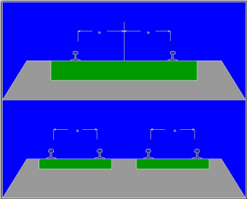
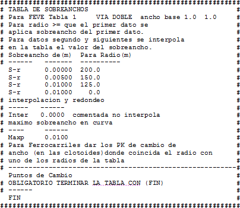

| |
|
HAT AÇIKLIKLARI
|
Bu menüden, tek hat durumunda raylar arasındaki yarı genişlik veya çift hat durumunda sağ ve sol hattın genişliği tanımlanır. Varsayılan olarak, program 1,435 m (uluslararası standart hat açıklığına karşılık gelen) genişliğini atar. Bu menünün [Otomatik] seçeneği ile, HAT VE TRAVERS menüsünde tanımlanan değerler, eksenin başlangıç ve bitiş KM'lerine birer genişlik verisi eklenerek ve plan ekseninden okunarak kopyalanır. Ayrıca tabloya göre genişlikler de atanabilir ve bu seçeneğe tıklandığında, ilgilenilen .tsa dosyalarından birini seçmek için bir pencere açılır. Bu tablolar ek genişlik (ekartman genişlemesi) atamak için hazırlanmıştır. Demiryolları için, diğerlerinin yanı sıra aşağıdaki tablolar mevcuttur:
Örnek olarak aşağıda fevet1v2.tsa tablosu gösterilmektedir: 
Yukarıdaki tablonun Değişim Noktaları komutu, programın genişlik kanununu genişlik değişim noktalarında vermesini sağlar, yani bu tablo için, travers tipinin değiştirilmesi gereken KM'ler olduğu için 200, 150 ve 125 yarıçaplarında. |